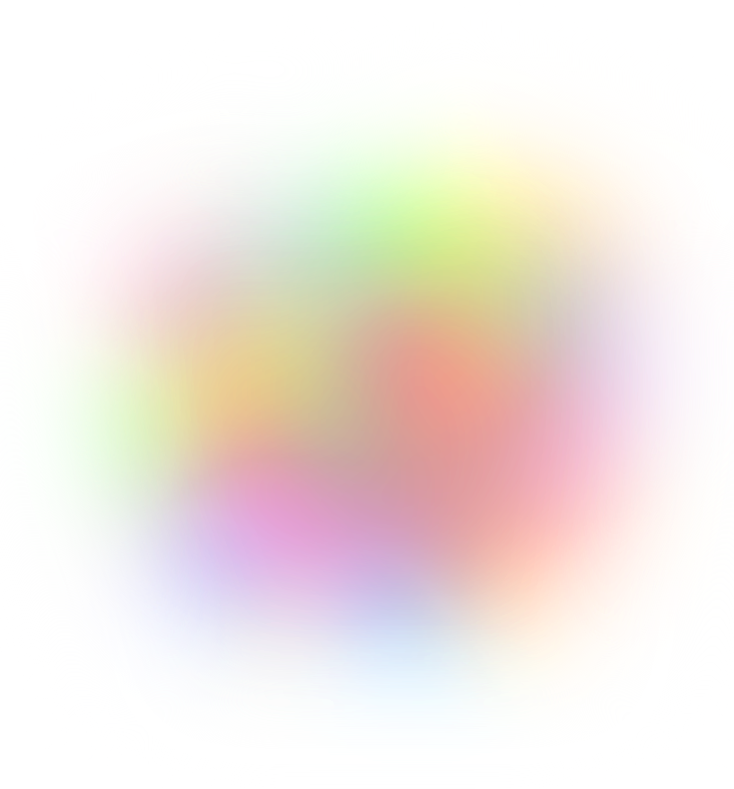
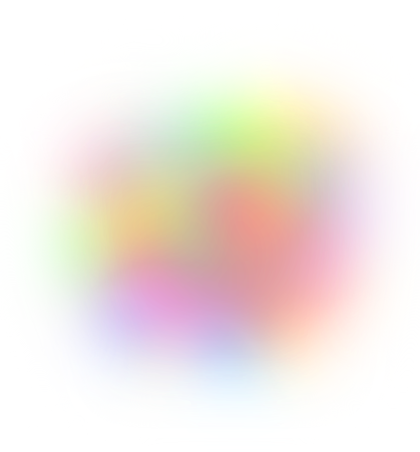
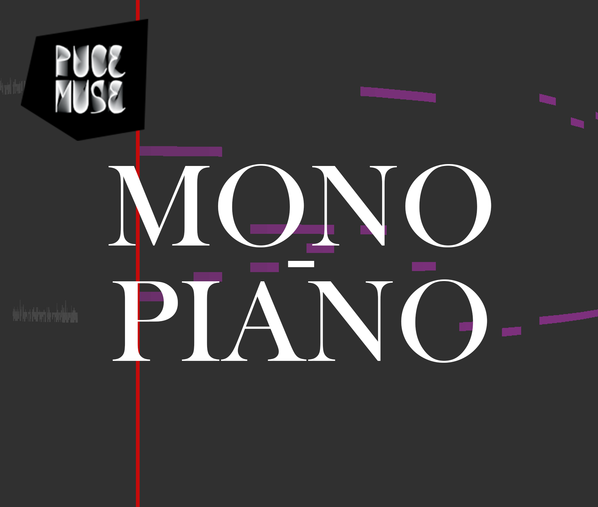
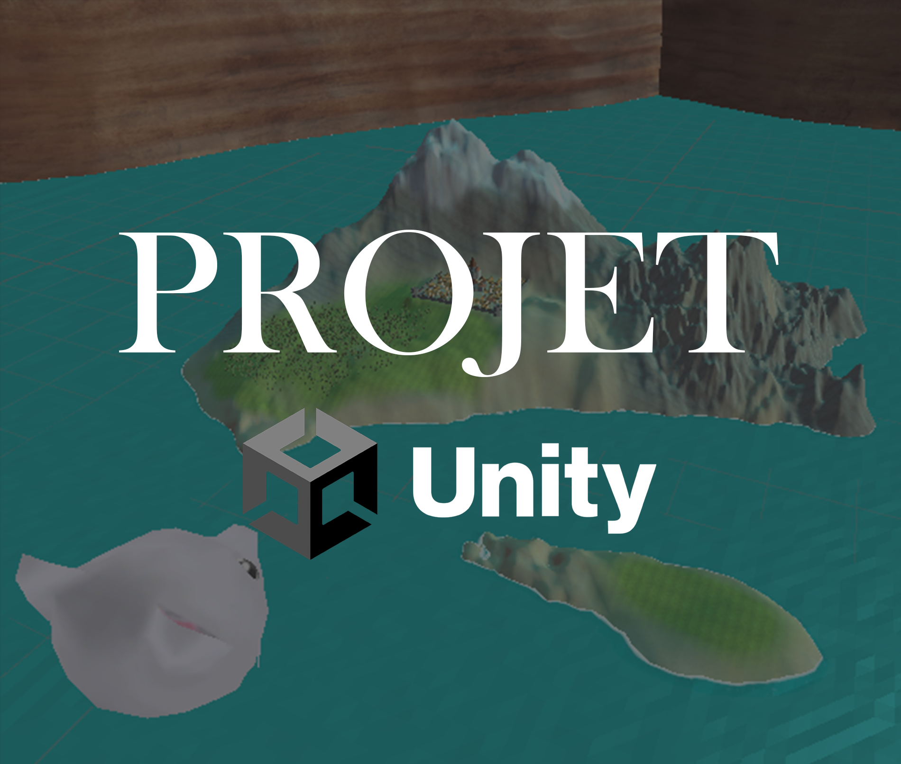
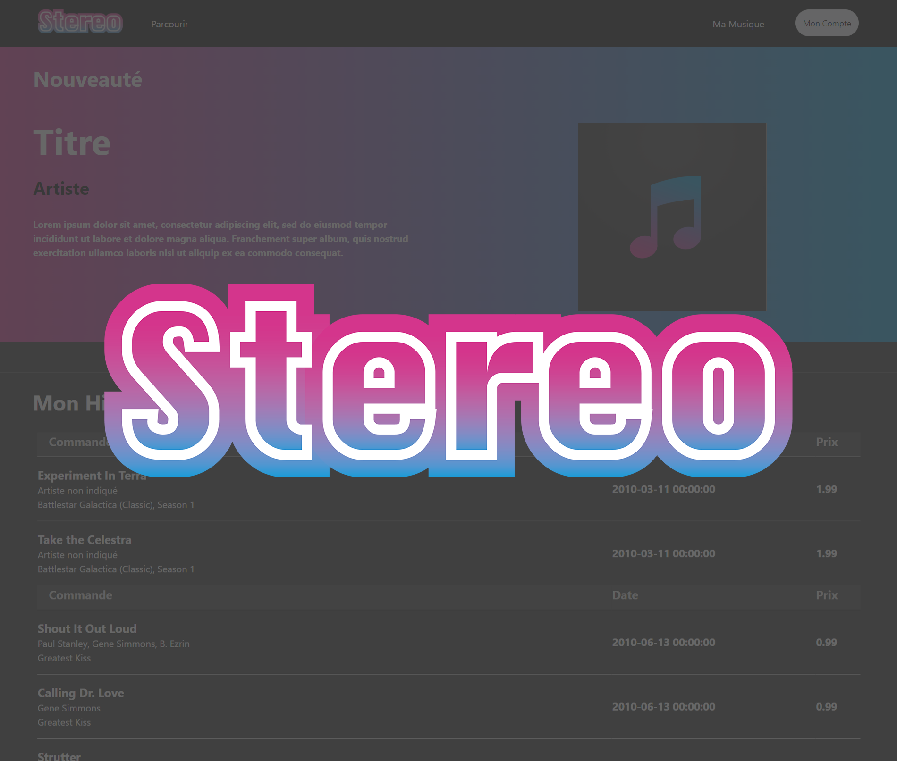
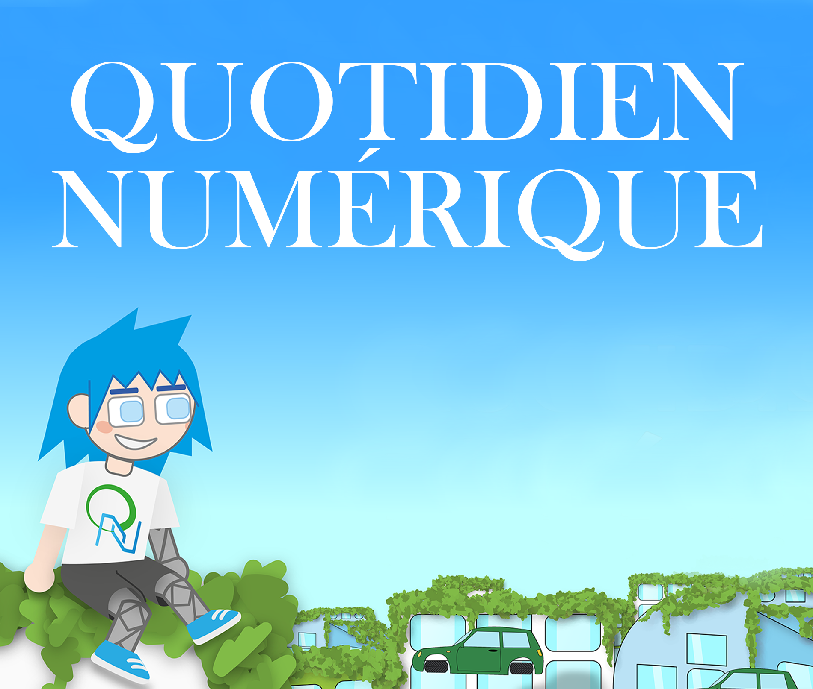
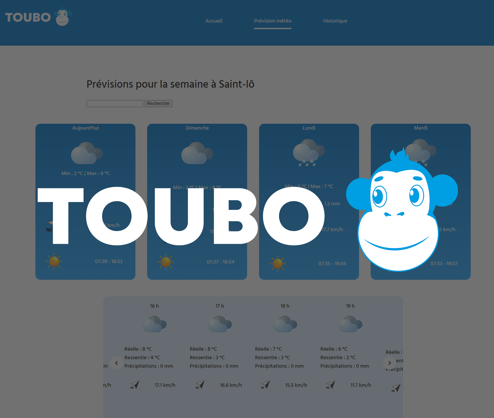
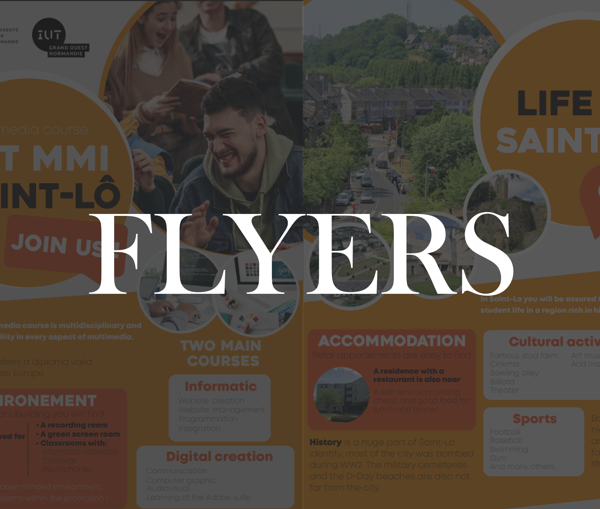
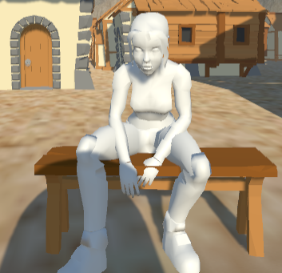
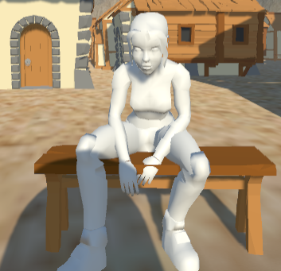

Paul
Lebée
Bienvenue sur mon Portfolio
 


Mono-Piano
DISPOSITIF INTERACTIF

Ile Unity
DISPOSITIF INTERACTIF GRAPHISME

STEREO
DÉVELOPPEMENT WEB UX DESIGN UI DESIGN

Quotidien Numérique
DÉVELOPPEMENT WEB GRAPHISME

TOUBO
DÉVELOPPEMENT WEB UX DESIGN

Flyers
DESIGN LANGUES


 
